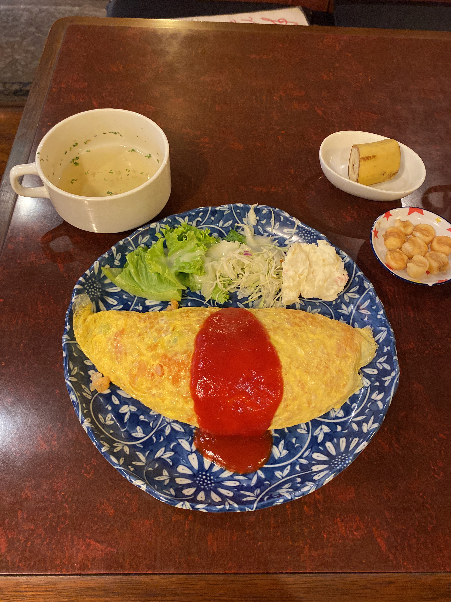
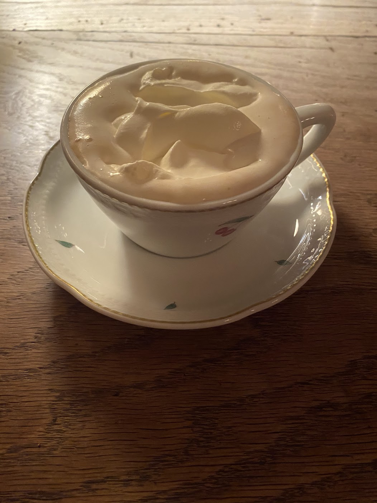

都心６区
渋谷区
シャルマン
渋谷 山手線
more
はまのやパーラー
渋谷パルコ 山手線など
more
都心６区
新宿区
珈琲タイムス
新宿 山手線など
more

但馬屋
新宿西口 山手線など
more

珈琲西武
新宿東南口 山手線など
more
自家焙煎珈琲 凡
新宿東口 山手線など
more
マックス
西新宿 都営大江戸線など
more

アルル
東新宿
more
珈琲ショップ クール
歌舞伎町
more
都心６区
中央区
十一房珈琲店
銀座
more
都心６区
文京区

---
文京区 --線
more
----
文京区 --線
more
都心６区
千代田区
珈琲ショパン
神保町
more
カフェ トロワバグ
神保町
more
自家焙煎珈琲 神田伯剌西爾
神保町
more
都心６区
港区
カフェ ラントマン
青山
more

Cafe Les Jeux An Grenier
表参道
more